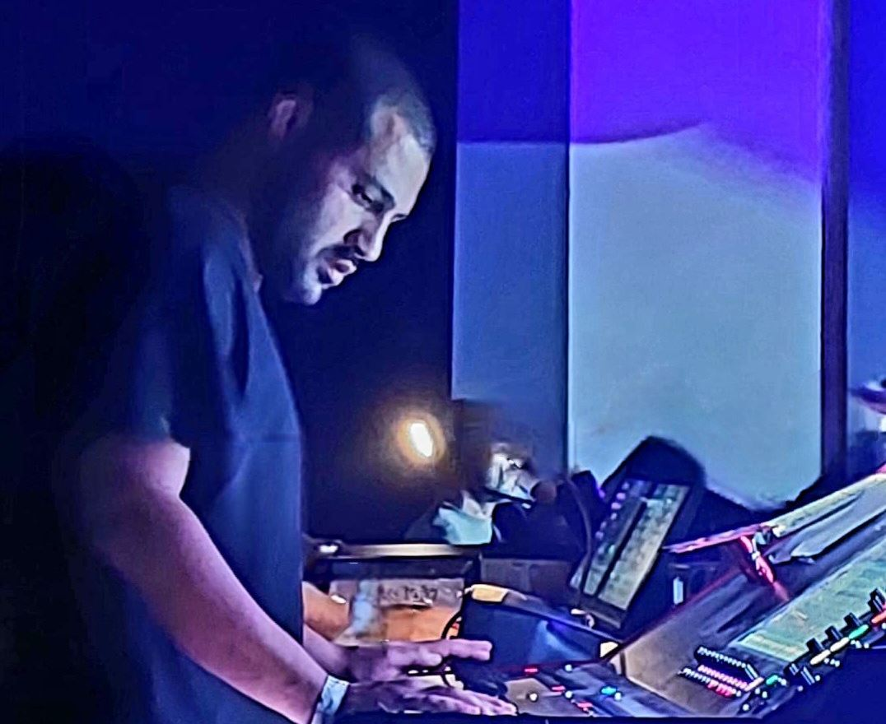

DINO
דין שגב
טכנאי סאונד להופעות חיות. הסאונד שהקהל שומע, והסאונד שהאמן שומע על הבמה.

מה אני מביא להפקה
אני עובד בעמדת FOH ובעמדת מוניטורים, ומגיע לכל מופע עם הכנה מסודרת: מההיכרות האישית, Pre Production, סאונדצ'ק ועד השיר האחרון.
FOH
מיקס לקהל (PA)
מיקס חי לאולם, מבניית הסשן והסאונדצ'ק ועד ניהול ההופעה בזמן אמת.
מוניטורים
מיקס לבמה ו־IEM
מיקסים אישיים לכל נגן וזמר, באוזניות ובמוניטורים, כדי שכל מי שעל הבמה ישמע בדיוק את מה שהוא צריך.
עיצוב סאונד שירה
עיצוב סאונד ואפקטים לשירה
עיצוב סאונד שיר אחר שיר, ואפקטים לקול שהאמן שומע גם באוזניות שלו על הבמה.
איך אני עובד
זה מתחיל הרבה לפני שעולים לבמה, מתוך קשר וחיבור אישי.
הנדסאי קול מוסמךהכשרה מקצועית מלאה בהנדסת קול.
עיצוב סאונד לכל שיראפקטים, דינמיקה ושינויים מתוכננים מראש לפי הסטליסט.
שתי העמדותFOH ומוניטורים.
אני גם מלמד
הגברה ואודיו Live Sound
שילוב של ידע מהשטח עם פדגוגיה ברורה.
- תעודת הוראה
- תואר ראשון בחינוך
- תואר שני בחינוך
מחפשים טכנאי סאונד?
ספרו לי על ההפקה, התאריך והמקום, ואחזור אליכם.